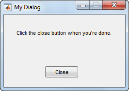
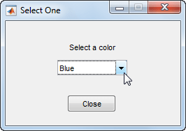

dialog
Create empty modal dialog box
Description
d = dialog(Name,Value)Figure property names and corresponding
values. Use this syntax to override the default properties.
Examples
Use the uicontrol function to add
user interface controls to a dialog box. For instance, create a program
file called mydialog.m that displays a dialog containing
text and a button.
function mydialog d = dialog('Position',[300 300 250 150],'Name','My Dialog'); txt = uicontrol('Parent',d,... 'Style','text',... 'Position',[20 80 210 40],... 'String','Click the close button when you''re done.'); btn = uicontrol('Parent',d,... 'Position',[85 20 70 25],... 'String','Close',... 'Callback','delete(gcf)'); end
Next, run the mydialog function from
the Command Window.
mydialog

Use the uiwait function to return
output based on user selections in the dialog box. For instance, create
a program file called choosedialog.m to perform
these tasks:
Call the
dialogfunction to create dialog with a specific size, location, and the title, “Select One”.Call the
uicontrolfunction three times to add text, a pop-up menu, and a button, respectively.Define the function,
popup_callback, to serve as the callback function for the button.Call the
uiwaitfunction to wait for the user to close the dialog before returning the output to the command line.
function choice = choosedialog d = dialog('Position',[300 300 250 150],'Name','Select One'); txt = uicontrol('Parent',d,... 'Style','text',... 'Position',[20 80 210 40],... 'String','Select a color'); popup = uicontrol('Parent',d,... 'Style','popup',... 'Position',[75 70 100 25],... 'String',{'Red';'Green';'Blue'},... 'Callback',@popup_callback); btn = uicontrol('Parent',d,... 'Position',[89 20 70 25],... 'String','Close',... 'Callback','delete(gcf)'); choice = 'Red'; % Wait for d to close before running to completion uiwait(d); function popup_callback(popup,event) idx = popup.Value; popup_items = popup.String; choice = char(popup_items(idx,:)); end end
Run the choosedialog function from
the Command Window. Then, select a color in the dialog.
color = choosedialog

choosedialog returns the last selected
color when you close the dialog.
color = Blue
Note
The uiwait function blocks the MATLAB® thread. Although uiwait works
well in a simple modal dialog, it is not recommended for use in more
sophisticated applications.
Name-Value Arguments
Example: dialog('WindowStyle','normal') sets the
WindowStyle property to
'normal'.
The properties listed here are only a subset. For a complete
list, see Figure.
Location and size of the drawable area, specified as a vector
of the form [left bottom width height]. This area
excludes the figure borders, title bar, menu bar, and tool bars.
This table describes each element in the Position vector.
| Element | Description |
|---|---|
left | Distance from the left edge of the primary display to the inner left edge of the window. This
value can be negative on systems that have more than one
monitor. If the figure is docked, then this value is relative to the Figure panel within the MATLAB desktop. |
bottom | Distance from the bottom edge of the primary display to the inner bottom edge of the window.
This value can be negative on systems that have more than one
monitor. If the figure is docked, then this value is relative to the Figure panel within the MATLAB desktop. |
width | Distance between the right and left inner edges of the dialog. |
height | Distance between the top and bottom inner edges of the window. |
All measurements are in units
specified by the Units property.
You cannot specify the figure Position property
when the figure is docked.
In MATLAB
Online™, the bottom and left elements of the
Position vector are ignored.
To place the full window, including the borders, title bar,
menu bar, tool bars, use the OuterPosition property.
Note
The Windows® operating system enforces a minimum window width and a maximum window size. If you specify a figure size outside of those limits, the displayed figure conforms to the limits instead of the size you specified.
Button down callback, specified as one of these values:
A function handle.
A cell array in which the first element is a function handle. Subsequent elements in the cell array are the arguments to pass to the callback function.
A character vector containing a valid MATLAB expression (not recommended). MATLAB evaluates this expression in the base workspace.
This callback executes whenever the user clicks a blank area of the figure.
For more information about specifying a callback property value as a function handle, cell array, or character vector, see Specify a Callback Function.
Use the SelectionType property to determine whether the user
pressed modifier keys.
Window style, specified as one of the following:
'modal'— The figure displays on top of all existing figure windows, making them inaccessible as long as the top figure exists and remains modal. However, any new figures created after a modal figure will display.When multiple modal windows exist, the most recently created window keeps focus and stays above all other windows until it becomes invisible, or is returned to a normal window style, or is deleted. At that time, focus reverts to the window that last had focus.
'normal'— The figure window is independent of other windows, and the other windows are accessible while the figure is displaying.'docked'— The figure displays in the desktop or a document window. When theWindowStyleproperty is set to'docked', you cannot set theDockControlsproperty to'off'. The'docked'option is not supported in MATLAB Online.
Note
These are some important characteristics of the
WindowStyle property and some recommended
best practices:
When you create UI windows, always specify the
WindowStyleproperty. If you also want to set theResize,Position, orOuterPositionproperties of the figure, then set theWindowStyleproperty first.You can change the
WindowStyleproperty of a figure at any time, including when the figure is visible and contains children. However on some systems, setting this property might cause the figure to flash or disappear and reappear, depending on the system's implementation of normal and modal windows. For best visual results, set theWindowStyleproperty at creation time or when the figure is invisible.Calling
reseton a figure does not change the value of theWindowStyleproperty.
Modal Window Style Behavior
When WindowStyle is set to
'modal', the figure window traps all keyboard
and mouse actions over all MATLAB windows as long as the windows are visible. Windows
belonging to applications other than MATLAB are unaffected.
Typing Ctrl+C when a modal figure has focus
causes that figure to revert to a 'normal'
WindowStyle property setting. This allows the
user to type at the command line.
Figures with the WindowStyle property set to
'modal' and the Visible
property set to 'off' do not behave modally until
MATLAB makes them visible. Therefore, you can hide a modal
window for later reuse, instead of destroying it.
Modal figures do not display menu children, built-in menus, or
toolbars. But, it is not an error to create menus in a modal figure
or to change the WindowStyle property setting
to 'modal' on a figure with menu children. The
Menu objects exist and the figure retains
them. If you reset the figure's WindowStyle
property to 'normal', the menus display.
Output Arguments
Dialog window, returned as a Figure object with these
property values set.
| Property | Value |
|---|---|
ButtonDownFcn | 'if isempty(allchild(gcbf)), close(gcbf),
end' |
DockControls | 'off' |
HandleVisibility | 'callback' |
IntegerHandle | 'off' |
InvertHardcopy | 'off' |
MenuBar | 'none' |
Number | [] |
NumberTitle | 'off' |
PaperPositionMode | 'auto' |
Resize | 'off' |
WindowStyle | 'modal' |
Version History
Introduced before R2006a